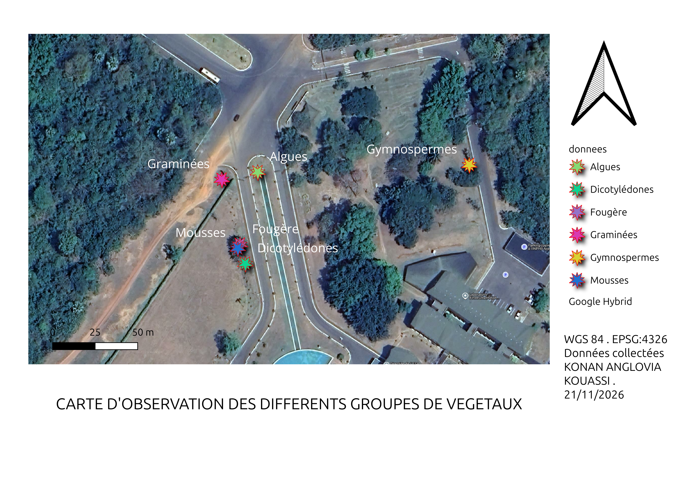

L'histoire que raconte ce site
Sortir de l'eau, c'était un défi : ne pas se dessécher, tenir debout, se reproduire sans eau libre et protéger la graine. Chaque groupe de plantes a apporté une innovation. Suivez la frise pour les découvrir, du plus ancien au plus récent.
Pourquoi c'est utile ? Comprendre l'évolution des fleurs et des fruits, c'est comprendre nos cultures : le cacaoyer, le riz, le maïs, le manioc.
La frise de l'évolution
 Algues
Algues Conifères
Conifères Graminées
GraminéesQuatre problèmes à résoudre
Se dessécher
La cuticule cireuse et les stomates apparaissent chez les mousses.
Tenir debout
Vaisseaux, lignine et vraies racines : les fougères deviennent vasculaires.
Se reproduire
Pollen et graine nue chez les conifères : plus besoin d'eau libre.
Disperser
Fleur, fruit et pollinisateurs chez les plantes à fleurs.
Un exemple ivoirien : le cacaoyer
Le cacaoyer est pollinisé par de minuscules moucherons (Forcipomyia). Pas de pollinisateurs, pas de cabosses : l'évolution des fleurs touche directement la production agricole. À l'inverse, le riz et le maïs sont pollinisés par le vent.
Observé sur la ferme
